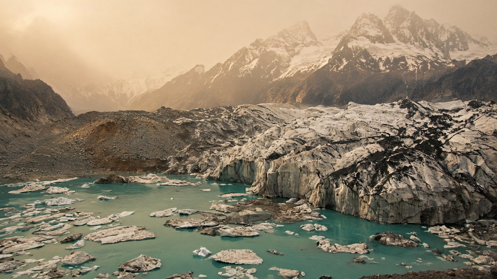
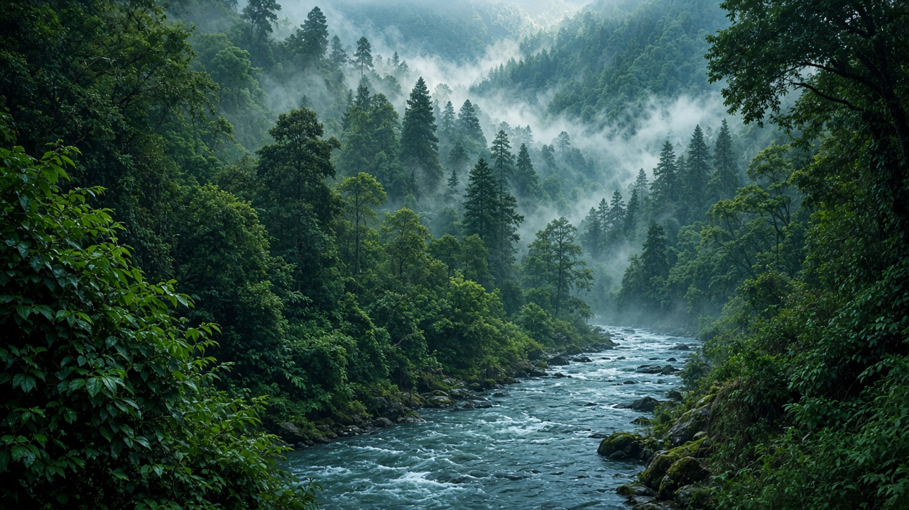

The Greenhouse Effect Explained
Published on July 4, 2026
The greenhouse effect is a natural process that makes Earth habitable. Solar energy reaches the planet as visible light, warming the surface, which then radiates energy back toward space as infrared heat. Certain gases in the atmosphere—water vapor, carbon dioxide, methane, and others—absorb some of this outgoing infrared radiation and re-emit it in all directions, including back toward the surface. Without this insulating layer, average global temperatures would be far below freezing and life as we know it could not thrive. The problem facing humanity is not the existence of the greenhouse effect itself, but its intensification through human-caused emissions.
Think of the atmosphere as a blanket whose thickness increases as greenhouse gas concentrations rise. More heat is retained, and the energy balance of the Earth system shifts toward warming. This extra energy does not distribute evenly; it drives changes in ocean currents, precipitation patterns, ice melt, and extreme weather. Scientists quantify the effect using radiative forcing, which measures how much additional energy is trapped at the top of the atmosphere compared with pre-industrial conditions. Positive forcing from greenhouse gases is partially offset by negative forcing from aerosols and reflective particles, but the net trend clearly points toward warming.
Understanding the greenhouse effect is foundational to climate literacy. It explains why reducing emissions matters, why some gases have stronger effects than others, and why delays in action allow heat to accumulate in oceans and ice systems with long-lasting consequences. Educational diagrams often compare Earth to a greenhouse or a car parked in the sun, but the physics is more nuanced, involving spectral absorption bands and feedback processes. Clear public communication of this basic mechanism helps counter misinformation and builds support for policies—from renewable energy to forest protection—that restore a safer energy balance for current and future generations.

ग्रीनहाउस प्रभाव एक प्राकृतिक प्रक्रिया हो जसले पृथ्वीलाई बस्न योग्य बनाउँछ। सौर्य ऊर्जा दृश्य प्रकाशका रूपमा ग्रहमा आइ पुग्छ, सतहलाई तताउँछ, र सतहले त्यसपछि ऊर्जालाई अवरक्त तापका रूपमा अन्तरिक्षतर्फ फर्काउँछ। वातावरणमा रहेका केही ग्यासहरू—जस्तै जलवाष्प, कार्बन डाइअक्साइड, मिथेन र अन्य—यो बाहिर जाने अवरक्त विकिरणको केही भाग अवशोषण गरी सतहतर्फ सहित सबै दिशामा पुनः उत्सर्जन गर्छन्। यो ताप अवरोधक तह नभए विश्वव्यापी औसत तापक्रम हिउँ जम्ने बिन्दुभन्दा धेरै तल हुन्थ्यो र हामीले चिनेको जीवन विकास गर्न सक्दैनथ्यो। मानवजातिको सामुन्ने समस्या ग्रीनहाउस प्रभावको अस्तित्व होइन, तर मानवजन्य उत्सर्जनबाट यसको तीव्रता बढ्नु हो।
वातावरणलाई एउटा कम्बल जस्तै सोच्नुहोस्, जसको मोटाइ ग्रीनहाउस ग्यास सान्द्रता बढ्दै जाँदा बढ्छ। धेरै ताप कैद हुन्छ, र पृथ्वी प्रणालीको ऊर्जा सन्तुलन तापनतर्फ सर्छ। यो अतिरिक्त ऊर्जा समान रूपमा वितरण हुँदैन; यसले महासागरीय धारा, वर्षा ढाँचा, हिउँ पग्लने र चरम मौसममा परिवर्तन ल्याउँछ। वैज्ञानिकहरूले विकिरण बल प्रयोग गरी प्रभाव मापन गर्छन्, जसले औद्योगिकरणअघिको अवस्थासँग तुलना गर्दा वातावरणको माथिल्लो तहमा कति थप ऊर्जा कैद हुन्छ भनी देखाउँछ। ग्रीनहाउस ग्यासबाट सकारात्मक विकिरण बललाई वायु-कण र परावर्तक कणहरूबाट नकारात्मक विकिरण बलले आंशिक रूपमा सन्तुलन गर्छ, तर कुल प्रवृत्ति स्पष्ट रूपमा तापनतर्फ संकेत गर्छ।
ग्रीनहाउस प्रभाव बुझ्नु जलवायु साक्षरताको आधार हो। यसले उत्सर्जन कमी किन महत्त्वपूर्ण छ, किन केही ग्यासहरू अरूभन्दा बलियो प्रभाव पार्छन्, र कार्यमा ढिलाइले किन महासागर र हिउँ प्रणालीमा ताप संचय गर्छ भनी व्याख्या गर्छ। शैक्षिक चित्रहरूले प्रायः पृथ्वीलाई ग्रीनहाउस वा घाममा पार्क गरिएको कारसँग तुलना गर्छन्, तर भौतिक विज्ञान अझ सूक्ष्म छ, स्पेकट्रम अवशोषण ब्यान्ड र प्रतिपुष्टि प्रक्रियासँग जोडिएको। यो आधारभूत तन्त्रको स्पष्ट सार्वजनिक सञ्चारले गलत सूचना विरुद्ध लड्न र नवीकरणीय ऊर्जादेखि वन संरक्षणसम्मका नीतिहरूलाई समर्थन गर्न मद्दत गर्छ, जसले हाल र भविष्यका पुस्ताका लागि सुरक्षित ऊर्जा सन्तुलन पुनर्स्थापना गर्छ।

ग्रीनहाउस प्रभाव एक प्राकृतिक प्रक्रिया है जो पृथ्वी को रहने योग्य बनाती है। सौर ऊर्जा दृश्य प्रकाश के रूप में ग्रह तक पहुँचती है, सतह को गर्म करती है, और सतह फिर ऊर्जा को अवरक्त गर्मी के रूप में अंतरिक्ष की ओर वापस विकीर्ण करती है। वायुमंडल में मौजूद कुछ गैसें—जैसे जलवाष्प, कार्बन डाइऑक्साइड, मीथेन और अन्य—इस बाहर जाने वाले अवरक्त विकिरण का कुछ हिस्सा अवशोषित करके सतह की ओर सहित सभी दिशाओं में पुनः उत्सर्जित करती हैं। इस ताप अवरोधक परत के बिना वैश्विक औसत तापमान हिमांकन बिन्दु से कहीं नीचे होता और हमारे ज्ञात जीवन फल-फूल नहीं सकता। मानवता के सामने समस्या ग्रीनहाउस प्रभाव का अस्तित्व नहीं, बल्कि मानवजनित उत्सर्जन से इसकी तीव्रता बढ़ना है।
वायुमंडल को एक कंबल की तरह सोचें, जिसकी मोटाई ग्रीनहाउस गैस सांद्रता बढ़ने पर बढ़ती है। अधिक गर्मी फँसती है, और पृथ्वी प्रणाली का ऊर्जा संतुलन तापन की ओर झुक जाता है। यह अतिरिक्त ऊर्जा समान रूप से वितरित नहीं होती; यह समुद्री धाराओं, वर्षा पैटर्न, बर्फ पिघलने और चरम मौसम में परिवर्तन लाती है। वैज्ञानिक विकिरण बल का उपयोग करके प्रभाव मापते हैं, जो औद्योगीकरण-पूर्व की स्थिति की तुलना में वायुमंडल की ऊपरी परत में कितनी अतिरिक्त ऊर्जा फँसती है, यह दर्शाता है। ग्रीनहाउस गैसों से सकारात्मक विकिरण बल को वायु-कण और परावर्तक कणों से नकारात्मक विकिरण बल आंशिक रूप से संतुलित करता है, लेकिन कुल रुझान स्पष्ट रूप से तापन की ओर इशारा करता है।
ग्रीनहाउस प्रभाव को समझना जलवायु साक्षरता की नींव है। यह बताता है कि उत्सर्जन में कमी क्यों महत्वपूर्ण है, कुछ गैसें दूसरों से अधिक प्रभाव क्यों डालती हैं, और कार्रवाई में देरी से गर्मी महासागरों और बर्फ प्रणालियों में क्यों जमा होती है। शैक्षिक चित्र अक्सर पृथ्वी की तुलना ग्रीनहाउस या धूप में खड़ी कार से करते हैं, लेकिन भौतिकी अधिक सूक्ष्म है, जिसमें स्पेकट्रम अवशोषण बैंड और प्रतिपुष्टि प्रक्रियाएँ शामिल हैं। इस मूल तंत्र का स्पष्ट सार्वजनिक संप्रेषण गलत सूचना का मुकाबला करता है और नवीकरणीय ऊर्जा से वन संरक्षण तक की नीतियों को समर्थन देता है, जो वर्तमान और भविष्य की पीढ़ियों के लिए सुरक्षित ऊर्जा संतुलन बहाल करती हैं।